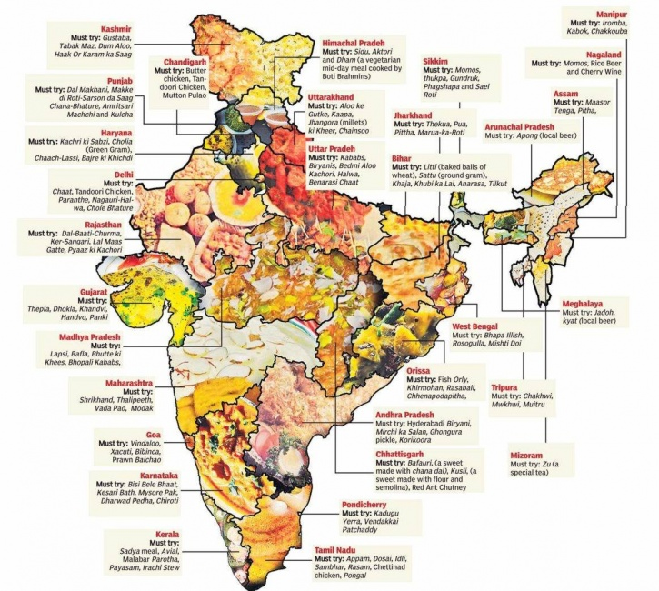

Indian cuisine is known for its rich flavors, diverse ingredients, and vibrant spices. It has a long and fascinating history that dates back thousands of years. The culinary traditions of India have been shaped by various factors, including regional influences, cultural exchanges, and historical events.
Each region of India has its own unique culinary traditions and specialties. From the spicy curries of South India to the rich Mughlai dishes of North India, the diversity of Indian food is truly remarkable. The use of aromatic spices, such as cumin, coriander, turmeric, and cardamom, is a common thread that runs through Indian cuisine.
